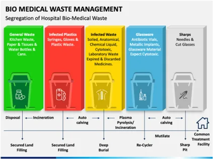
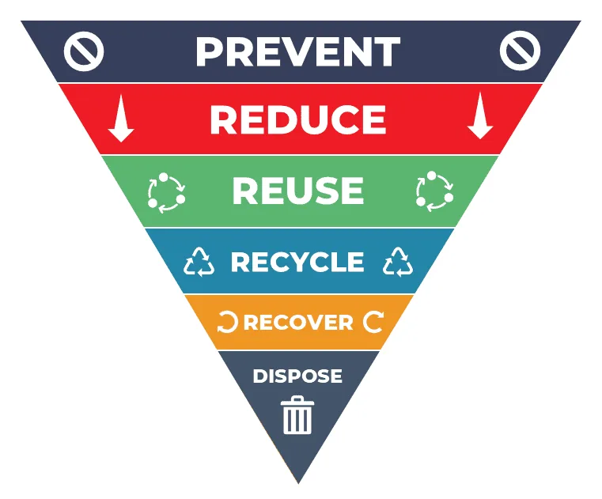
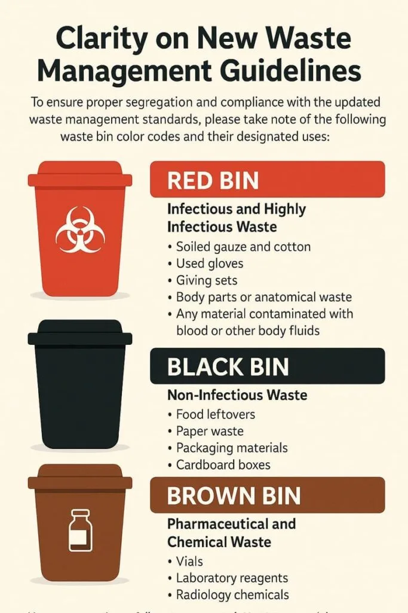

Expanded Nursing Uganda Explanation
Waste management and disposal should be understood beyond a short definition. Link the concept to patient history, focused assessment, common risks, nursing priorities, documentation and evaluation of outcomes.
01 **WASTE MANAGEMENT**
Waste is any material – solid, liquid, or gas – that is unwanted and/or unvalued, and has been discarded or discharged by its owner .
Healthcare Waste refers to all types of waste from all health care activities ; waste generated by the health care facilities, research facilities and laboratories.
Healthcare waste is also known as biomedical waste , infectious waste or medical waste . Healthcare waste is also known as biomedical waste , infectious waste or medical waste.
The large volumes of health care waste if not managed properly can lead to a global hazard. This could not only lead to the spread of highly contagious diseases but the hazardous chemical waste produced by the use of items can cause considerable damage to the ecosystem and the environment.
02 **Classification of wastes**
- Solid waste includes common household waste (including kitchen and garden waste), commercial and industrial waste, sewage sludge, construction and demolition waste, waste from agriculture and food processing, and mine and quarry tailings.
- Liquid waste includes domestic waste water (liquid kitchen, laundry, and bathroom waste), storm water, used oil, and waste from industrial processes.
- Gaseous waste comprises gasses and small particles emitted from open fires, incinerators, and vehicles, or produced by agricultural and industrial processes.
- Bio-degradable : Whether they can be degraded by physical or biological means (paper, wood, fruits and others)
- Non-biodegradable; These cannot be degraded easily by physical or biological means (plastics, bottles, old machines, cans, Styrofoam containers and others)
- Hazardous wastes : Substances unsafe to use commercially, industrially, agriculturally, or economically that are shipped, transported to or brought from the country of origin for dumping or disposal in, or in transit through, any part of the world.
- Non-hazardous : Substances safe to use commercially, industrially, agriculturally, or economically that are shipped, transported to or brought from the country of origin for dumping or disposal in, or in transit through, any part of the world.
- Type of Waste Percentage
- Non-infectious Waste 80%
- Pathological and Infectious Waste 15%
- Sharps Waste 1%
- Chemical or Pharmaceutical Waste 3%
- Pressurized Cylinders, Broken Thermometers Less than 1%
SOURCES OF HEALTHCARE WASTE
- Major Sources Minor Sources
- Hospitals Clinics Dental Clinics Physician’s Office
- Laboratories Research Centers Home Health-care Nursing Homes
- Animal Research Blood Banks Acupuncturists Psychiatric Clinics
- Nursing Homes Mortuaries Cosmetic Piercing and Tattooing Funeral Services
- Autopsy Centers Paramedic Services Institutions for Disabled Persons
03 **Sources of health care waste**
Major sources
- Hospitals
- Clinics
- Laboratories
- Research centers
- Animal Research
- Blood banks
- Nursing Homes
- Mortuaries
- Autopsy centers
Minor sources
- Dental clinics
- Physician’s office
- Home health-care
- Nursing homes
- Acupuncturists
- Psychiatric clinics
- Cosmetic piercing and tattooing
- Funeral services
- Paramedic services
- Institutions for disabled persons
04 WASTE MANAGEMENT HIERARCHY
Waste management hierarchy is a structured approach to prioritize and manage waste by minimizing its environmental impact.
It consists of several key steps, listed in descending order of priority
Waste management hierarchy is defined as the order of preference for action to reduce and manage waste and is usually presented diagrammatically in the form of a pyramid.
The aim of waste hierarchy is to extract the maximum practical benefits from products and to generate a minimum amount of waste.
- Prevention/avoidance: This concept focuses on the measures to be taken so as not to create any type of wastes in the first place e.g. avoiding to eat from the ward. This is given the top priority in the waste management program.
- Reduction of Wastes/minimization: According to this concept, the health care setting should reduce or minimize the amount of waste or the toxicity of wastes e.g. avoiding to use gloves in procedures that don’t necessary need one to use gloves and companies should take action to make changes in the type of materials that are being used for the production of the specific products, so as to ensure that the by-products are of the least toxicity.
- Reuse: Reuse is another effective Solid waste management strategy, in which the waste is not allowed to enter into the disposal system. The wastes are collected in the middle of the production phase and are again fed along with the source to aid in the production process e.g. Autoclaving metal instruments or sterilization of medical equipment.
- Recycle: In the recycling strategy, the waste materials are implemented in the production of a new product. In this process, the waste materials of various forms are collected and then processed. Post processing, they enter into the production lines to give rise to new products. This process prevents pollution and saves energy.
- Energy Recovery: The energy recovery process is also called waste to energy conversion. In this process; the wastes that cannot be recycled are being converted into usable forms of energy such as heat, light and electricity etc. This helps in the saving of various natural resources. Various processes such as combustion, anaerobic digestion, landfill gas recovery, pyrolization and gasification are being implemented to carry out the conversion process.
- Treatment and Disposal: The disposal process holds the last position in the waste management hierarchy . Landfills are the common form of waste disposal.
05 Waste Management Steps/Waste Stream
Waste stream refers to the systemic steps followed in health care solid waste management from its generation to its final disposal.
****
1. Generation:
Non-Hazardous waste/General waste : Office, Kitchen, Administrative, Municipal/Public Areas, Hostels, Store Authorities, Restrooms, etc.
Hazardous (Infectious & toxic waste) : Wards, Treatment Rooms, Dressing Rooms, OT ICU, Labour Room, Laboratory, Dialysis Room, CT Scan, Radio-imaging, etc.
****
- WHO Classification Description of Waste Examples
- 1. General Waste No risk to human health Office paper, wrappers, kitchen waste, general sweeping, etc.
- 2. Pathological Waste Human tissue or fluid Body parts, blood, body fluids, etc.
- 3. Sharps Sharp waste Needles, scalpels, knives, blades, etc.
- 4. Infectious Waste May transmit bacterial, viral, or parasitic diseases Laboratory culture, tissues (swabs), bandages, etc.
- 5. Chemical Waste Chemical waste Laboratory reagents, disinfectants, film developer, etc.
- 6. Radioactive Waste Radioactive waste Unused liquid from radiotherapy or lab research, contaminated glassware, etc.
- 7. Pharmaceutical Waste Expired or outdated drugs/chemicals Expired medications and chemicals
- 8. Pressurized Container Waste from pressurized containers Gas cylinders, aerosol cans, etc.
2. Segregation:
Waste segregation is the practice of separating different types of waste at the source to ensure proper handling and disposal.
Done at the point of waste generation and placed in separate colored bags. Color coding may vary by nation or hospital.
- Type of Waste Category Examples Type of Bin
- Infectious and Highly Infectious Waste Soiled gauze and cotton Used gloves Giving sets Body parts or anatomical waste Any material contaminated with blood or other body fluids RED BIN
- Non-Infectious Waste Food leftovers Paper waste Packaging materials Cardboard boxes BLACK BIN
- Pharmaceutical and Chemical Waste Vials Laboratory reagents Radiology chemicals BROWN BIN
3. Collection or Handling of Waste:
Waste collection is the systematic gathering of various types of medical waste.
Handling concerns the collection, weighing and storing conditions .
Trained sanitation personnel, often supervised by nursing staff and sanitation supervisors, manage this process. They ensure waste is correctly segregated at the point of generation into appropriate color-coded bins.
Proper documentation is maintained in a register to track waste quantity and type. Regular cleaning and disinfection of garbage bins are essential for maintaining hygiene.
The waste collection process is conducted in compliance with safety regulations and guidelines, ensuring the protection of personnel and the environment. This systematic collection is a crucial step in the safe and efficient management of medical waste.
Waste should not be stored in the generation area for more than 4-6 hours. Waste collected in various areas is prepared for transport or disposal/treatment.
****
4. Transportation :
Hospitals should have a separate corridor and lift dedicated to carrying and transporting waste.
General waste is deposited at municipal dumps.
- Waste designated for autoclaving and incineration is disposed of at a separate site for external transport (using distinct colored plastic bags).
- Transportation is carried out in sealed containers to prevent leakage.
****
5. Treatment & Disposal:
Waste disposal in hospitals is the final phase in the systematic management of medical waste.
It involves the safe and environmentally responsible removal or destruction of waste, ensuring it no longer poses health risks to patients, staff, and the community.
- General waste is dumped at municipal dumping sites.
- The sanitation officer is responsible for coordinating with municipal authorities for proper disposal.
- Use of labels/symbols helps in identifying waste for treatment (e.g., Risk of Corrosion, Danger of Infection, Toxic Hazards, Glass Hazards, Radioactive Materials, etc.).
TREATMENT AND DISPOSAL TECHNIQUE FOR HEALTH CARE WASTE
- Incineration
- Chemical disinfection
- Wet & dry thermal treatment (Autoclave)
- Microwave irradiation
- Land disposal
- Inertization
- Technique Description
- Incineration – High temperature dry oxidation process of over 800 ° C. – Reduces organic and combustible waste to inorganic and incombustible waste – Used for most hazardous waste and waste that can’t be recycled – Results in significant reduction of waste volume and weight
- Disinfection Chemical – Kills or inactivates pathogens contained in waste – Suitable for liquid waste like urine, blood, stool, and hospital sewage
- Wet and Dry Thermal Treatment – Wet Thermal Treatment: Steam autoclave sterilization process, and any waste contaminated with microorganisms. – Dry Thermal Treatment: Non-burn, dry thermal disinfection process suitable for infectious waste and sharps, not to be used for pathological, cytotoxic, or radioactive waste
- Microwave Irradiation – Most organisms destroyed by microwaves of specific frequency and wavelength – Efficiency checked through bacteriological and virological tests
- Land Disposal Burial – Used when hazardous healthcare waste cannot be treated or disposed elsewhere – Investigate more suitable treatment methods – May include land open dumps and sanitary landfills
- Inertization OR Encapsulation – Mixing waste with cement and other substances before disposal – Inhibits waste from migrating into surface and groundwater – Mixture proportions: 65% pharmaceutical waste, 15% lime, 15% cement, 5% water
06 Nursing Uganda Clinical Lens
Use Waste management and disposal as a practical nursing topic, not only a memorized definition. Translate theory into safe decisions, accountability, communication and service improvement.
- What to understand first: define waste management and disposal, identify the normal or expected pattern, then explain what changes when the patient is unwell.
- Why it matters in care: the nurse must recognize risk early, explain findings clearly, document accurately and know when to escalate.
- How to revise it: connect each point to assessment, nursing diagnosis or care problem, intervention, rationale and evaluation.
07 Assessment Guide
- The problem, stakeholders, available resources, policy requirements and ethical issues.
- Risks to patients, staff, confidentiality, quality, costs and continuity.
- Documentation, reporting lines, supervision and evaluation measures.
08 Nursing Priorities, Rationales and Outcomes
- Use evidence, policy and professional standards to guide action.
- Communicate clearly, document decisions and protect confidentiality.
- Evaluate whether the action improves safety, learning or service delivery.
The rationale for these priorities is patient safety: nursing actions should prevent deterioration, reduce discomfort, support recovery and create clear evidence for the next caregiver.
- Expected outcome: The plan is documented, realistic, ethical and improves patient care or learning outcomes.
09 Patient Teaching and Revision Check
- Explain waste management and disposal in simple language the patient or caregiver can repeat back.
- Teach warning signs, medicine or follow-up instructions, hygiene or lifestyle points where relevant.
- For exams, prepare a short answer using: definition, causes or risk factors, signs, assessment, management, complications and prevention.
- For ward practice, document baseline findings, actions taken, patient response and the plan for review.
Illustrations and Diagrams (3)



Related Video Lectures
Watch nursing lecture videos on YouTube for this topic. Opens in a new tab.
Watch on YouTubeExternal link: YouTube may use its own cookies and terms. Nursing Uganda is not affiliated with YouTube.